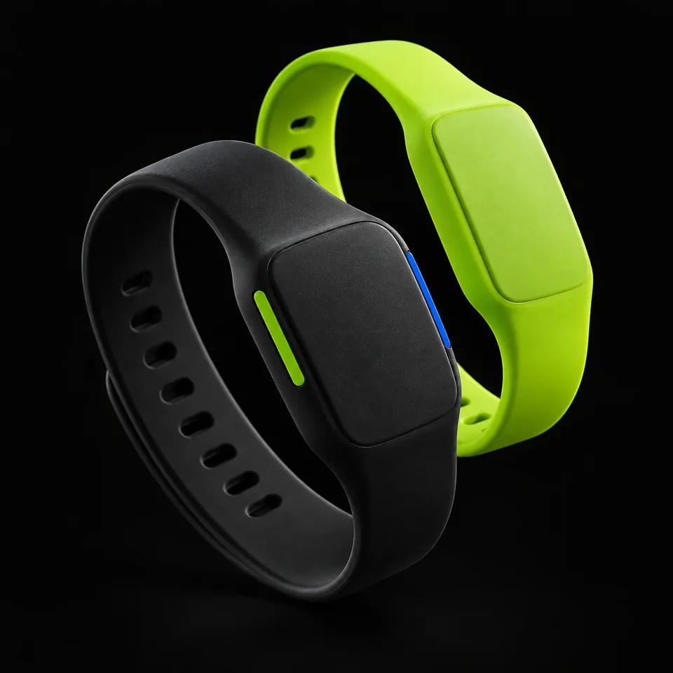

يدفع بسهولة
شراء الاحتياجات المدرسية بالسوار، دون الحاجة إلى حمل النقد.
من أول عملية شراء، تبدأ حكاية وعي. سوار يجمع الدفع المدرسي، متابعة المصروف، والتعلّم المالي في تجربة واحدة تكبر مع أبنائنا.

ماذا لو أصبح المصروف اليومي فرصة للتعلّم؟
«سوار» فكرة منظومة مالية تعليمية لطلاب التعليم العام من ٧ إلى ١٨ سنة. تربط سوارًا يعمل بتقنية الاتصال قريب المدى NFC بمحفظة رقمية وتطبيق مرافق، لتسهيل الشراء داخل المدرسة وبناء عادات مالية واعية.
يتعلّم الطالب كيف يختار، ويتابع وليّ الأمر أين يذهب المصروف، وتدير المدرسة تعاملاتها من مكان واحد.
شراء الاحتياجات المدرسية بالسوار، دون الحاجة إلى حمل النقد.
مصروف محدّد ومتابعة واضحة تساعد على فهم الإنفاق اليومي.
محتوى مالي وأنشطة تفاعلية ترتبط بنقاط ومكافآت محفّزة.
أربع خطوات مترابطة تجعل المصروف جزءًا من يوم دراسي أكثر تنظيمًا.
يشحن وليّ الأمر المحفظة الرقمية ويخصّص المصروف المناسب للطالب.
قبل بداية اليوميضع وليّ الأمر حدًا يوميًا يساعد الطالب على تنظيم مشترياته.
مساحة للاستقلاليةيستخدم الطالب السوار عند نقطة البيع لإتمام مشترياته داخل المدرسة.
في لحظة الشراءتظهر العملية في التطبيق، لتصبح مراجعة المصروف حوارًا يوميًا مفيدًا.
بعد كل عمليةتعمّق في السوار، أو الوعي المالي، أو كيف تنضم المدارس، كلٌّ في صفحته.
اختر لون السوار في نموذج ثلاثي الأبعاد، وجرّب محاكاة تطبيق وليّ الأمر، وتعرّف على مبادئ الأمان.
استكشف←أربعة دروس تفاعلية كما يراها الطالب، وحاسبة توضّح أثر الادخار اليومي على أهدافه.
استكشف←انضم إلى التجربة الأولى، واطّلع على الباقات المقترحة للأسر والمدارس.
استكشف←أن يكون سوار جسرًا بين الجيل الجديد والعالم المالي الرقمي.
نطمح إلى تمكين الطلاب من فهم أموالهم وإدارتها بثقة، وربط التعلّم النظري بالممارسة اليومية، بمشاركة الأسرة والمدرسة.
تنسجم الفكرة مع توجهات رؤية السعودية ٢٠٣٠ نحو التحول الرقمي وتقليل الاعتماد على النقد، وتضع بناء العادات المالية في قلب التجربة.
الدفع جزء من الفكرة. تجمع منظومة سوار بين المدفوعات المدرسية، إدارة المصروف، متابعة وليّ الأمر، والتعلّم المالي المرتبط بالنقاط والمكافآت.
تستهدف طلاب التعليم العام من ٧ إلى ١٨ سنة، إلى جانب أولياء أمورهم والمدارس التي توفّر بيئة الاستخدام.
لا. تقوم تجربة الدفع المقترحة على تقريب السوار من نقطة البيع داخل المدرسة. ويُستخدم التطبيق المرافق لإدارة المحفظة والمتابعة والتعلّم.
يحدّد وليّ الأمر المصروف وحدود الإنفاق، بينما يتخذ الطالب قراراته اليومية ضمن هذه المساحة، ويتعلّم من مراجعة مشترياته وأهدافه.
يجمّده وليّ الأمر من التطبيق مباشرة فيتوقف عن العمل، ثم يُربط سوار بديل بالمحفظة نفسها ويبقى الرصيد كما هو.
يشحن وليّ الأمر المحفظة من التطبيق بوسائل الدفع المعتادة، مثل مدى أو Apple Pay، ثم يوزّع المصروف على أبنائه.
لا. يعمل السوار بتقنية NFC التي تستمد طاقتها من جهاز نقطة البيع لحظة التقريب، فلا يحتاج إلى بطارية أو شحن.
في المرحلة الأولى يعمل داخل نقاط البيع المعتمدة في المدرسة فقط، وهذا جزء من مبادئ الأمان المقترحة.
صُمّمت التجربة للطلاب من ٧ إلى ١٨ سنة، ويتغيّر محتوى الدروس والأهداف بحسب المرحلة الدراسية.
املأ نموذج طلب الزيارة في صفحة المدارس، وسنتواصل مع إدارة المدرسة لترتيب زيارة تعريفية وخطة تشغيل تجريبية.
سجّل اهتمامك الآن لتكون من أوائل الأسر التي تجرّب سوار.